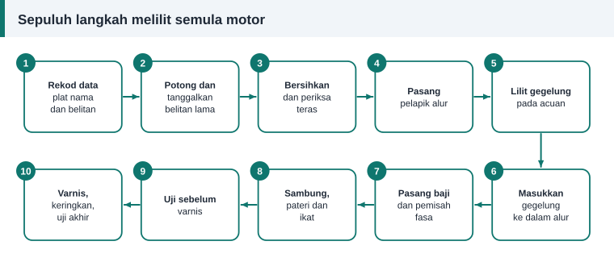

Panduan bengkel
Langkah Demi Langkah Melilit Semula Motor Tiga Fasa
Panduan ini mengandaikan motor sudah diasingkan daripada bekalan, dibawa ke bangku kerja dan dibuka. Jika belum, baca keselamatan semasa membaiki motor dahulu.


1. Rekod data
Catat plat nama, ukuran teras, rentang, lilitan, saiz dawai dan sambungan. Senarai penuh ada dalam cara merekod data belitan.
2. Tanggalkan belitan lama
Potong hujung belitan di satu sisi serapat mungkin dengan teras tanpa mencederakan laminasi. Varnis lama perlu dilembutkan dengan haba sebelum gegelung boleh ditarik keluar dari sisi yang satu lagi.
Bengkel yang lengkap menggunakan ketuhar pembakar bersuhu terkawal. Kajian EASA/AEMT memperoleh keputusan memuaskan pada suhu teras sekitar 370 °C, dan memberi amaran bahawa suhu melebihi kira-kira 400 °C boleh merosakkan penebat antara laminasi lalu menaikkan kehilangan besi. Jangan bakar stator dengan api terbuka. Jika gegelung masih sukar ditarik, panaskan semula. Jangan paksa sehingga gigi teras terkopak.
3. Bersihkan dan periksa teras
Buang sisa penebat dari alur dengan pengikis lembut atau berus dawai. Jangan kikir gigi teras sehingga laminasi bercantum. Luruskan gigi yang bengkok dan periksa kesan terlebur akibat litar pintas.
4. Pasang pelapik alur
Potong kertas penebat mengikut panjang teras ditambah unjuran di kedua-dua hujung. Lipat hujungnya menjadi kelepet supaya tidak tergelincir. Pilih bahan sekurang-kurangnya sama kelas penebat dengan asal.
5. Lilit gegelung
Laraskan acuan mengikut saiz gegelung lama. Lilit bilangan lilitan yang tepat dengan tegangan sekata, dan ikat setiap gegelung di beberapa tempat sebelum dikeluarkan dari acuan. Gegelung dalam satu kumpulan dililit berterusan tanpa memotong dawai.
6. Masukkan gegelung
Tolak dawai masuk sedikit demi sedikit melalui bukaan alur menggunakan bilah gentian atau buluh. Jangan gunakan alat logam tajam. Bagi belitan dua lapis, sisi bawah gegelung dimasukkan dahulu mengikut urutan, dan beberapa gegelung pertama dibiarkan terangkat untuk menerima gegelung terakhir.
7. Pasang baji dan pemisah fasa
Tutup setiap alur dengan baji. Selitkan kertas pemisah di antara kumpulan fasa berlainan pada hujung belitan, kerana di situlah voltan antara dawai paling tinggi.
8. Sambung, pateri dan ikat
Sambung kumpulan mengikut rajah yang direkod. Bersihkan enamel, pintal dan pateri hujung dawai, kemudian sarungkan setiap sambungan. Ikat hujung belitan dengan tali supaya tegar. Pastikan ia tidak lebih panjang daripada asal dan tidak menyentuh penutup hujung.
9. Uji sebelum varnis
Kesilapan masih mudah dibaiki pada peringkat ini. Ukur rintangan setiap fasa, dan uji rintangan penebatan ke teras serta antara fasa. Urutan penuh ada dalam ujian selepas lilit semula.
10. Varnis, keringkan dan uji akhir
Panaskan stator untuk membuang lembapan, celup atau tuang varnis sehingga meresap ke dalam alur, toskan, kemudian bakar mengikut suhu dan tempoh yang ditetapkan oleh pengilang varnis. Selepas sejuk, bersihkan permukaan lubang stator, pasang semula motor dengan galas yang baik dan jalankan ujian akhir.
Kesilapan yang paling kerap
- Salah kira lilitan kerana tidak mengesahkan dengan gegelung kedua.
- Satu kumpulan disambung terbalik, sehingga motor berdengung dan arus tidak seimbang.
- Hujung belitan lebih panjang daripada asal.
- Enamel tercalar semasa memasukkan gegelung.
- Varnis tidak dibakar cukup lama.
Rujukan dan bacaan lanjut
Artikel berkaitan
Cara Merekod Data Belitan Sebelum Membuka Motor
Lima minit mencatat data sebelum memotong belitan lama menjimatkan berjam-jam meneka kemudian. Gunakan senarai semak ini untuk plat nama, teras, gegelung, dawai dan sambungan.
Penebat Alur, Baji dan Varnis: Bahan Penebatan Belitan
Dawai kuprum hanya separuh cerita. Pelapik alur, pemisah fasa, baji, sarung dan varnis melindungi belitan daripada litar pintas, getaran serta lembapan sepanjang hayat motor.
Ujian Selepas Lilit Semula: Rintangan, Keseimbangan dan Arus Tanpa Beban
Motor yang baru dililit semula mesti lulus beberapa ujian sebelum diserahkan. Ikuti urutan daripada pemeriksaan visual hingga arus tanpa beban dan ketahui maksud setiap bacaan.